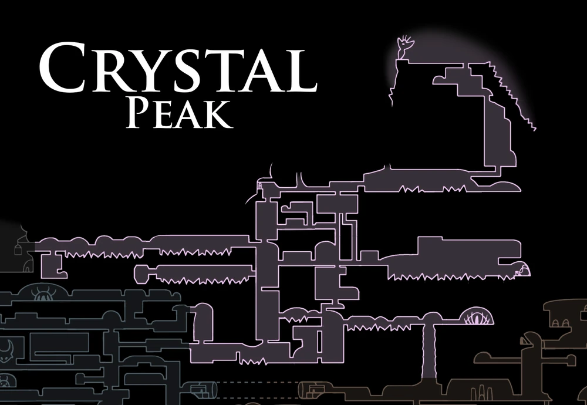

Cornifer
O cartógrafo alegre cantarolando enquanto mapeia as cavernas brilhantes de cristais.

The Miner
Uma mineira absorta em seu trabalho de coletar cristais, cantando alegremente sob a influência dos minerais.

O cartógrafo alegre cantarolando enquanto mapeia as cavernas brilhantes de cristais.
Uma mineira absorta em seu trabalho de coletar cristais, cantando alegremente sob a influência dos minerais.

Um golem mineiro corrompido pelos cristais radiantes que dispara lasers perigosos de seu banco.

Insetos blindados por cristais afiados que rastejam pelas paredes e tetos das minas.

Habitantes cujos corpos foram completamente tomados e endurecidos por formações cristalinas.